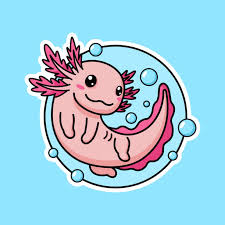

Походження назви

За легендою ацтеків, бог вогню та блискавки Ксолотль перетворився на цю істоту, щоб уникнути жертвопринесення. Саме тому аксолотля вважають містичною істотою.

Головна сторінкаАксолотль — це незвичайна амфібія, яка все життя залишається у личинковій формі. Він має милу "усмішку" та зовнішні зябра, що роблять його дуже впізнаваним.
Наукова назва аксолотля — Ambystoma mexicanum. Він походить із Мексики та живе у прісних озерах і каналах.
Аксолотлі відомі своєю унікальною здатністю відновлювати частини тіла. Вони можуть регенерувати лапи, хвіст і навіть частини серця та мозку.
У природі аксолотлі найчастіше мають темне забарвлення, але в неволі можна зустріти рожевих, білих і навіть золотистих особин
Аксолотль є нічною твариною. Вдень він зазвичай ховається, а вночі активно шукає їжу.
Основу його харчування складають черв’яки, комахи, дрібна риба та молюски.
За легендою ацтеків, бог вогню та блискавки Ксолотль перетворився на цю істоту, щоб уникнути жертвопринесення. Саме тому аксолотля вважають містичною істотою.
Сьогодні аксолотль знаходиться під загрозою зникнення. У дикій природі їх залишилося дуже мало.
Основні причини зникнення — забруднення води, урбанізація та поява хижих риб.

Пройдіть невелике опитування та поділіться своєю думкою про цих дивовижних істот!